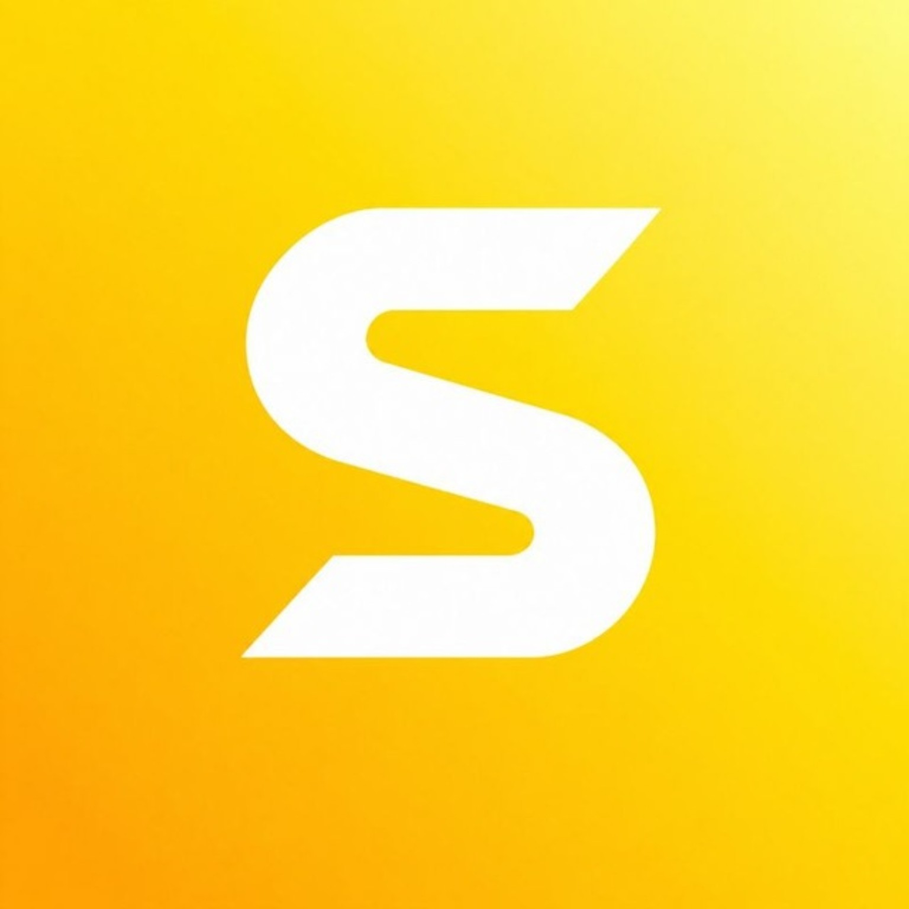
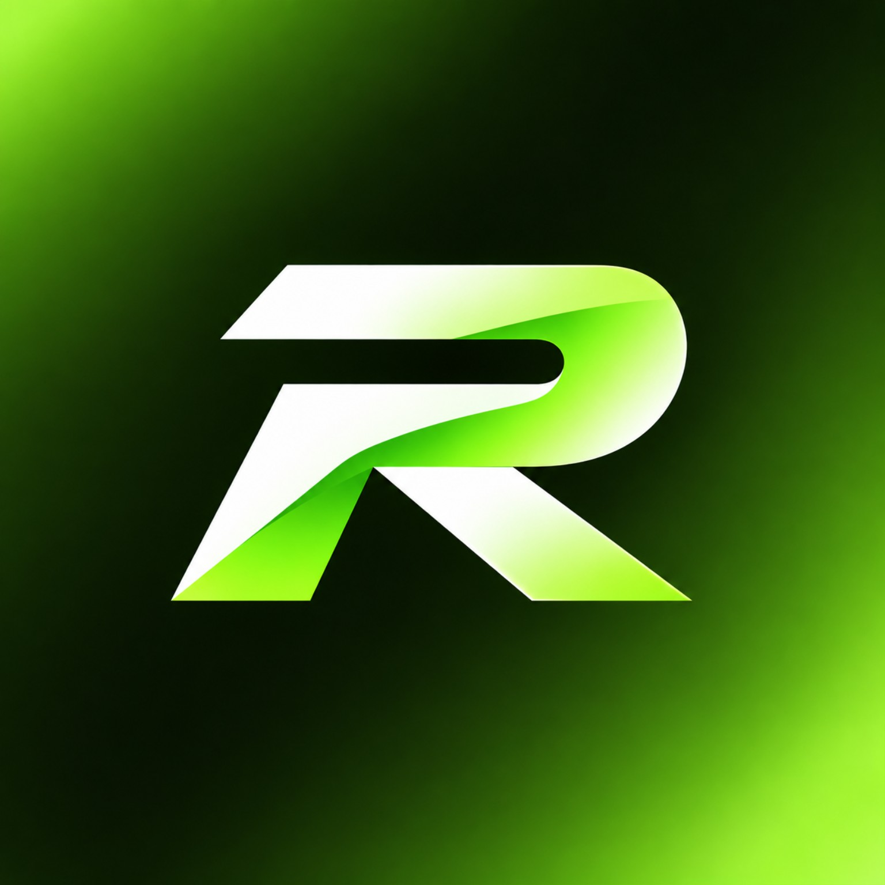

Разработчик,
которому интересно
как всё устроено.
Пишу код, собираю проекты и разбираюсь в технологиях не только на уровне использования. От идеи и логики до интерфейса и запуска.
Разработка приложений, автоматизация и собственные продукты. Люблю чистую архитектуру, продуманные детали и интерфейсы, которыми приятно пользоваться.
Пишу код, собираю проекты и разбираюсь в технологиях не только на уровне использования. От идеи и логики до интерфейса и запуска.

PROJECT / 01↗Minecraft-проект с собственной игровой атмосферой. Поддержка версий 1.21.4–26.2.
Клиент для Minecraft 1.21.4 с поддержкой ReallyWorld и Spookytime.

PROJECT / 03↗VPN-сервис с несколькими локациями, стабильным подключением и хорошей скоростью.
Уровень отражает мой текущий опыт и практику, а не формальную сертификацию.
/\\
/ \\
/\\ \\
/ \\
/ ,, \\
/ | | \\
/_-'' ''-_\\